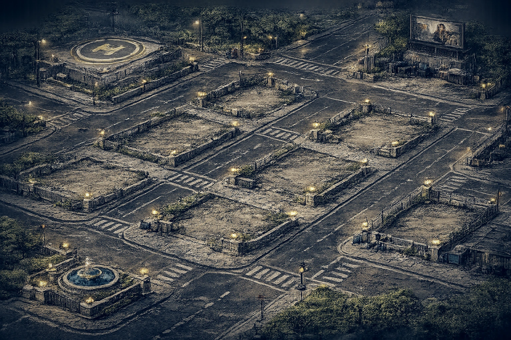
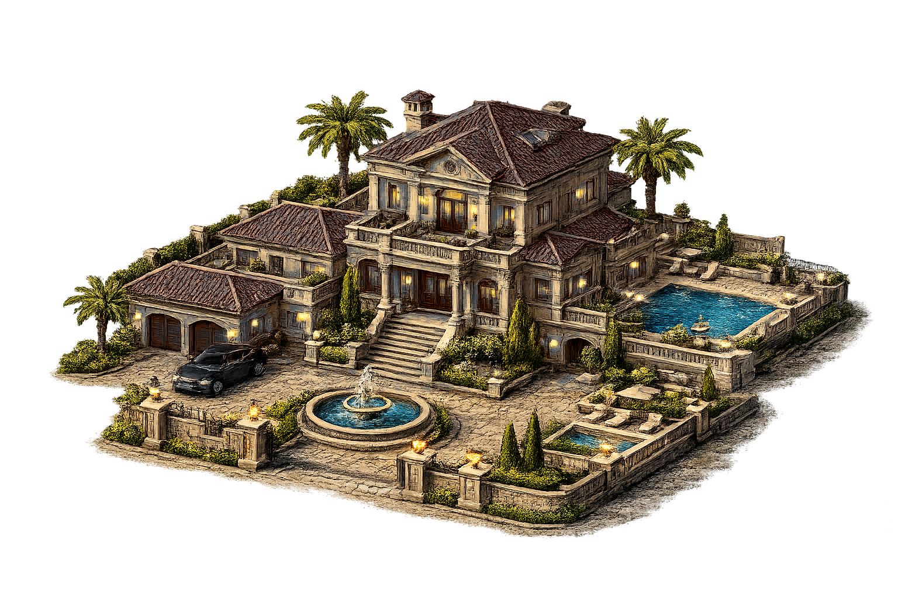

VILLA / QGCe comparateur montre les deux images réelles au même emplacement. Les éclairages animés, les ombres GPU, les autres bâtiments et les interactions PixiJS sont à tester dans le jeu complet. Les coordonnées sauvegardées dans Supabase ne sont pas modifiées.